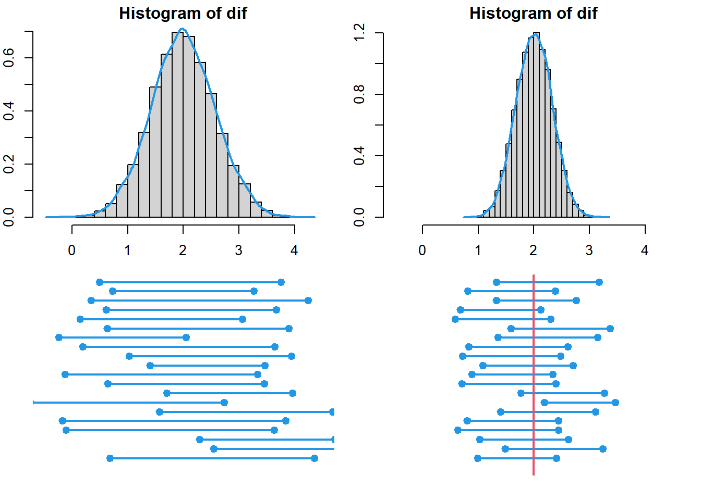

Comparación de medias
Rey D. Molina
22/9/2021
1 Introducción
En muchos casos puede ser de interés comparar la media de dos poblaciones diferentes
1.1 Distribución muestral de \(\bar{x_1}-\bar{x_2}\)
Para realizar las comparaciones es necesario conocer primero la distribción muestral del estadístico \(\bar{x_1}-\bar{x_2}\) Si tenemos dos poblaciones con medias \(\mu_1\) y \(\mu_2\), y varianza \(\sigma_1\) y \(\sigma_2\), respectivamente, el estadístico que da un estimador puntual de la diferencia entre \(\mu_1\) y \(\mu_2\) es \(\bar{X}_1-\bar{X}_2\). Por lo tanto, para obtener una estimación puntual de \(\mu_1-\mu_2\) se selccionan dos muestras aleatorias independientes, una de cada población, de tamaño \(n_1\) y \(n_2\) y se calcula \(\bar{x}_1-\bar{x}_2\), la diferencia de las medias muestrales.
Se puede esperar que el estadístico \(\bar{X}_1-\bar{X}_2\) esté distribuida de forma aproximadamente normal con media \[\mu_{\bar{X}_1-\bar{X_2 }}=\mu_1-\mu_2\] y desviación estándar \[\sigma_{\bar{X}_1-\bar{X}_2} = \sqrt{\dfrac{\sigma^2_1}{n_1}+\dfrac{\sigma^2_2}{n_2}}\], es posible notar que a mayor tamaño de muestra se tiene una desviación estándar menor.
Conociendo la distribución de muestral de la diferencias de medias, y con un nivel de confianza establecido se pueden realizar comparaciones entre
La comparación de medias puede ser llevada a cabo mediante
- Intervalos de confiaza
- Pruebas de hipótesis
El primer caso consiste en la estimación de la diferencia de medias \(\mu_1-\mu_2\) a través de intervalos de confianza de la forma
En el segundo caso consiste en realizar el proceso de prueba de hipótesis
2 Intervalo de confianza
2.1 Intervalo de confianza para la diferencia de medias, varianzas iguales desconocidas
Si \(\bar{x}_1\) y \(\bar{x}_2\) son las medias de muestras aleatorias independientes con tamaños \(n_1\) y \(n_2\), respectivamente, tomadas de poblaciones más o menos normales con varianzas iguales pero desonocidas, un intervalo de confianza del \(100(1-\alpha)\%\) para diferencia de medias \(\mu_1-\mu_2\) esta dado por
\[ (\bar{x}_1-\bar{x}_2)-t_{\alpha_2}s_p\sqrt{\dfrac{1}{n_1}+\dfrac{1}{n_2}}<\mu_1-\mu_2<(\bar{x}_1-\bar{x}_2)+t_{\alpha_2}s_p\sqrt{\dfrac{1}{n_1}+\dfrac{1}{n_2}} \]
donde \(s_p\) es la estimación agrupada de la desviación estándar de la población y \(t_\alpha/2\) es el valor \(t\) con \(v=n_1+n_2-2\) grados de libertad, que deja un área de \(\alpha/2\) a la derecha.

3 Prueba de hipótesis
Se considera usar dos marcas diferentes de pintura látex. El tiempo de secado en horas se mide en especímenes de muestras de uso de las dos pinturas. Se seleccionan 15 especímenes de cada una y los tiempos de secado son los siguientes:
| Puntura A | Pintura B |
|---|---|
| 3.5 | 4.7 |
| 2.7 | 3.9 |
| 3.9 | 4.5 |
| 4.2 | 5.5 |
| 3.6 | 4.0 |
| 2.7 | 5.3 |
| 3.3 | 4.3 |
| 5.2 | 6.0 |
| 4.2 | 5.2 |
| 2.9 | 3.7 |
| 4.4 | 5.5 |
| 5.2 | 6.2 |
| 4.0 | 5.1 |
| 4.1 | 5.4 |
| 3.4 | 4.8 |
Suponga que el tiempo de secado se distribuye normalmente con varianzas iguales. Encuentre un intervalo de confianza del \(95\%\) para la diferencia de medias de secado.
Tiempo <- c(PA, PB)
Pintura <- rep(c("A", "B"), each = 15)
Dat_P <- data.frame(Pintura, Tiempo)
boxplot(Tiempo ~ Pintura)
title("Gráfico Tiempo ~ Pintura")